Forums > Tutorials > Advanced x264 Encoding Guide (New Version)
#417783
by parent5446_files/donor.png "Donor")
_files/Rank4.png "Rank 4: 74 Awards") (Elite)
[ Jan 19 2012, 09:27 ] - [Quote]
[Report Post]
↑
(Elite)
[ Jan 19 2012, 09:27 ] - [Quote]
[Report Post]
↑
(Elite)
[ Jan 19 2012, 09:27 ] - [Quote]
[Report Post]
↑
_files/default.png)
Note: The arcsoft decoder is no longer needed with the new version of eac3to.
Preface and License: Show
0. Setting Up the Encoding Environment
This section only needs to be followed once.
: Show
1. Ripping the Source
If you don't have a physical disc, i.e., you downloaded the DVD/Blu-ray from somewhere, skip this section.
: Show
2. Demuxing the Source
: Show
3. Transcoding Lossless Audio
This is only if your Blu-ray/concert DVD has lossless audio (PCM/DTS MA-HD/TrueHD) and you want the final encode to have wither AC3 or DTS audio.
: Show
4. Transcoding Commentary Audio
: Show
5. Preparing the Video:
: Show
6. x264 Settings:
: Show
7. Test Encodes:
: Show
8. Encoding the Entire Movie:
: Show
9. Extracting Chapter Markers:
: Show
10. Ripping Subtitles
: Show
11. Muxing Everything Together
: Show
Last but not least, play your file. If it's a good movie, consider watching the whole thing._files/smile.gif) Just make sure no problems occurred and that the movie looks like it is supposed to.
Just make sure no problems occurred and that the movie looks like it is supposed to.
To Do: Show
Preface and License: Show
Reading this isn't mandatory for the guide, but should provide a nice introduction into what this guide is for and how to use it.
This guide is an attempt at an all-inclusive layman's explanation to high quality x264 encoding from an original retail source. The purpose of this guide is to explain how to create a transcode of a DVD or Blu-ray such that no significant quality is lost when compared to the original source, even if preserving such quality is at the expense of file size. If you are looking to encode to or under a specific size, this is not the guide for you.
This guide is intended to replace and combine the Advanced x264 Encoding guide, HD x264 Encoding guide, and Source/Encoding Comparison guide.
This guide is Windows-specific and uses programs such as Avisynth and AvsPmod that do not work under non-Windows systems and programs such as RipIt4Me and DVD Decrypter which work under Linux with limited support using wine. A Linux guide is in the making, so stay tuned (though that guide will require more CLI knowledge).
It is recommended you read this guide in its entirety before actually following the instructions so that you have an idea of the process. The guide describes the process in a very linear order, but in reality many steps in this guide can be done while another process is taking place (such as dealing with audio while video is encoding). This guide also benefits from a powerful computer, primarily in terms of CPU speed.
This guide was originally written by parent5446 and is licensed under the Creative Commons Attribution-ShareAlike 3.0 United States license, meaning you are free to copy, alter, and distribute this guide for whatever purposes and without my permission so long as you provide attribution and keep the license. (See http://creativecommons.org/licenses/by-sa/3.0/us/ for more details.)
0. Setting Up the Encoding Environment
This section only needs to be followed once.
: Show
So first you need to figure out what you're going to be encoding from: Blu-ray, DVD, or both. Open the sections relevant to what you will be encoding from and follow the necessary instructions. Note that encoding from Blu-ray is always preferred and will result in a much higher quality encode, primarily because DVD is at a lower resolution than Blu-ray and will result in more apparent artifacting in the source that cannot be removed.
Setting Up for DVD Sources: Show
Programs You Will Need:
Download both programs. DVD Decrypter comes with an installer, but RipIt4Me does not. Feel free to extract RipIt4Me to your Program Files directory or any place that is convenient for you to access it. Note that unless you have your Windows installation set to index your Program Files folder (which is not the default setting), you will have to navigate to RipIt4Me manually or put a shortcut on your desktop in order to find the program.
Now launch RipIt4Me, and click Logs/Settings -> Preferences.
Make your settings look like the above picture. Then press OK and close RipIt4Me.
Now launch DVD Decrypter, and go to Tools -> Settings.
Make your settings look like the above picture. Then press OK and close DVD Decrypter.
Setting Up for Blu-ray Sources: Show
Programs You Will Need:
- Microsoft Visual C 2010 Redistributable Package - x86 and x64 versions
- SupRip
- Haali Media Splitter
- AnyDVD HD
If you cannot/do not want to get a copy of AnyDVD HD
Many of these programs do not come with installers. Simply extract them to wherever is convenient for you. Just make sure to put the ProcessingDeviceKeysSimple.txt in AACSKeys's installation folder.
After setting up the programs necessary for ripping from your source, now it's time to set up the encoding environment.
Programs You Will Need:
- eac3to
- Avisynth
- Avisynth Plugins
- AvsPmod
- DGMPGDec
- VirtualDub
- Mulder's x264 Launcher
- x264
- oggenc2
- Chapter Grabber
- MKVMerge v5.8.0 (no later versions until further notice)
Read these installation instructions for installing these programs.
Installation Instructions: Show
For eac3to, simply unpack it where you like. After setting up eac3to, follow the instructions in the Arcsoft Decoder zip file. Then install 32-bit Avisynth and unpack the plugins into the plugins/ folder in the installation directory. Next install DGMPGDec. Then open DGIndex, click Video -> iDCT Algorithm -> IEEE-1180 References, and close the program.
Now install Mulder's x264 Launcher. After running the installation, download both the 32-bit and 64-bit versions of x264 with 8-bit depth and use them to replace the versions in the Mulder Launcher's directory. The rest of the programs require no special installation instructions. Some have installers, some do not. Simply put everything wherever is most convenient for you.
Finally, if you are extracting from Blu-ray source, there are two more programs you will need for audio processing:
Blu-ray Only Audio Programs: Show
Programs Needed:
- Sony Sound Force with Dolby Digital Encoder
- DTS-HD Master Audio Suite
Simply install. No special instructions.
_files/vx1dev.png)
_files/o9nx2g.png)
1. Ripping the Source
If you don't have a physical disc, i.e., you downloaded the DVD/Blu-ray from somewhere, skip this section.
: Show
Ripping from source obviously depends on what source you are ripping from. If you are ripping a Blu-ray using AnyDVD HD, the program is self-explanatory and no instructions will be provided here. Otherwise, follow the appropriate instructions below.
If you are encoding from an already decrypted DVD or Blu-ray (meaning you do not have the physical disc), then the ripping step is not necessary and you can skip down to the demuxing.
Ripping from DVD: Show
Insert your DVD into you drive and open RipIt4Me. Click "1-Click Mode" and then click Next. RipIt4Me will launch DVD Decrypter automatically. Do not touch or move ANYTHING on your computer until DVD Decrypter has started the rip (not just after it opens but after it starts).
DVD Decrypter and RipIt4Me will run automatically and it will take a while. The result will be a VIDEO_TS folder with the decrypted DVD inside. You will be using the VIDEO_TS folder, not the physical DVD, from now on.
Ripping from Blu-Ray w/o AnyDVD: Show
If you're wondering exactly what protection is used on a Blu-ray, it is recommended you read Doom9's thread on the subject. Overall I have found it is useful to know what and why you are doing when performing an encode rather than just the how, but of course that's up to you.
First open up a command line and navigate to the folder where DumpVID and AACSKeys is installed. Then run the command:
dumpvid d
Where "d" is the letter of your Blu-ray drive the disc is in. A screen will come up saying "Press Enter to start hammering."
You are going to press Enter then open up the Blu-ray in a media player of your choice (such as Arcsoft TotalMedia). The player must be capable of playing encrypted Blu-rays on its own. Make sure to press Enter and start hammering before you open the player. After the Blu-ray starts playing, DumpVID should display the VID for the disc. Copy the VID and save it somewhere.
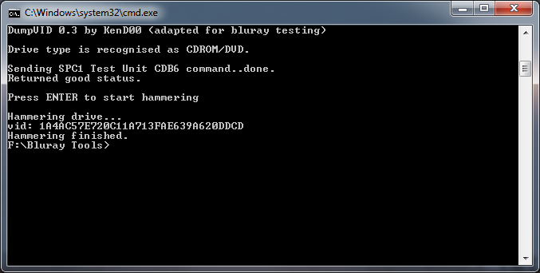
Now run the following command:
aacskeys d 40000918200608410020202020200000
Replace the "d" with your drive letter like before and replace the string of numbers afterward with the VID you copied from DumpVID. The output should look something like this:
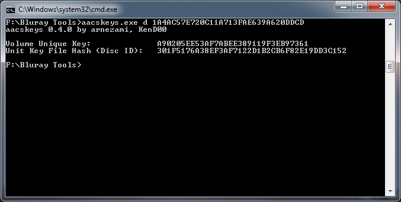
Copy and save the Volume Unique Key (VUK) and then close the terminal.
Finally, open up the Blu-ray Ripper. Pick the drive as your sources, your folder of choice as the destination, and enter the VUK into the appropriate field. Make sure the decrypt and copy radio button is selected and press start. This will take a while.
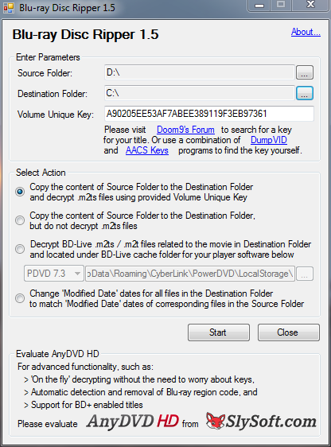
_files/xdhtzs.png)
_files/41485l.png)
2. Demuxing the Source
: Show
Now that you have the source, it's time to separate all the tracks. Previously for DVDs demuxing was done with DGIndex, which you can do, but it is of my opinion that you get more control over exactly what you want to extract with eac3to, so this guide is going to use that for all audio demuxing.
The first step is to figure out what your source files are. Unfortunately, this is different between Blu-ray and DVD:
- For DVD, go into VIDEO_TS/ and look at the file list. The file name format is VTS_xx_y.VOB, where xx is the title number and y is the file number. Find the title number with the most files, and all files starting from 1 (not 0) will be your source. Your eac3to command line will be eac3to VTS_xx_1.VOB+VTS_xx_2.VOB+VTS_xx_3.VOB..., with all the filenames concatenated with plus signs.
- For Blu-ray, eac3to figures out the files automatically. Run eac3to path/to/bluray and you will get a list of titles on the Blu-ray. Find the main titles, and then add it to your command line like so eac3to path/to/bluray 1), where "1" is the number of the title.
Now run eac3to with the source files or title as your arguments. The output will be what video and audio stream are in your source.
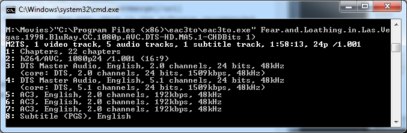
Now from here you are going to construct your command line based on a number of different conditions depending on the DVD/Blu-ray you are using and the type of encode you want. Below is a list of conditions describing what you may see. Follow all applicable instructions below to build up your command line.
You have either a DVD or a Blu-ray with MPEG-2 video.: ShowFor MPEG-2 video, you are going to put aside your terminal temporarily, as you will not be using eac3to for this. Open up DGIndex and then click and drag the media files from Windows Explorer into DGIndex. (Note that for Blu-ray sources this means going into the BDMV/STREAM folder and figuring out which m2ts files are in your main playlist.)
If you are demuxing from a Blu-ray, first click Stream -> Detect PIDs: PAT/PMT. After that, regardless of source, press File -> Save Project, and save to a d2v file somewhere.
DGIndex will index the file and save the d2v file. Do not deleted the original source folder. The d2v file will only contain an index and will not have the actual video, which means you cannot move or delete the original ripped source folder.
You have a Blu-ray and the video is NOT MPEG-2.: ShowIn this case, you will want to demux the video into an MKV file, so add 1: main_video.mkv onto the end of your command line, replacing "1" with the stream number of your video as determined by the eac3to output.
You have a Blu-ray or concert DVD with lossless main audio track (PCM/DTS MA-HD/TrueHD).: ShowOK, so in this case it get's a little complicated, because it depends on what you want and what is on the disc.
- If the audio is DTS MA-HD, you are making an HD encode, and you want to keep the lossless audio, add 3: main_audio.dtshd onto the end of your command line, replacing "3" with the number of the audio track.
- If you want the encode to have DTS audio, add 3: main_audio.wavs onto the end of your command line, replacing "3" with the number of the audio track.
- If you want the encode to have AC3 audio, add 3: main_audio.w64 onto the end of your command line, replacing "3" with the number of the audio track.
- If you want the encode to have AAC audio, add 3: main_audio.aac onto the end of your command line, replacing "3" with the number of the audio track.
- If you want the encode to have FLAC audio, add 3: main_audio.flac onto the end of your command line, replacing "3" with the number of the audio track.
Also, if the audio is greater than 5.1 surround and your final audio format is not lossless, i.e., you are converting 7.1 PCM/DTS MA-HD/TrueHD to 5.1 AC3/DTS, there are some additional options you need to add to downmix the audio when decoding.
- If the audio is 7.1, add -down6 after whatever you added to the command line above, e.g. 3: main_audio.w64 -down6.
- If the audio is 6.1, add -down6 -0,1,2,3,5,6,4 after whatever you added to the command line above, e.g. 3: main_audio.w64 -down6 -0,1,2,3,5,6,4.
You have a disc with no lossless main audio track.: ShowThis will almost always be the case with DVD sources, though rare with Blu-ray sources. In this case, you want to demux the audio as is and use that demuxed file directly. So add on to your command line 3: main_audio.ac3, replacing "3" with the number of your audio track and replacing ac3 with whatever your disc's audio format is.
You have a disc with commentary tracks or similar secondary audio.: ShowAdd onto your command line 5: commentary.wav, replacing "5" with the number of the commentary track. If eac3to says the commentary track is more than two channels, add -down2 -mixlfe right after that as well.
You have a Blu-ray with subtitles.: ShowFor each subtitle, add onto your command line 7: subs-english.sup, replacing "7" with the number of the commentary track and English with the appropriate language.
You should now have a final command line that looks something like below (the below example was a Blu-ray with lossless audio, commentary, and subtitles).
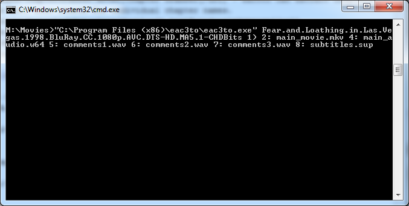
Press Enter and let the demuxing begin.
3. Transcoding Lossless Audio
This is only if your Blu-ray/concert DVD has lossless audio (PCM/DTS MA-HD/TrueHD) and you want the final encode to have wither AC3 or DTS audio.
: Show
This section assumes you followed the instructions for demuxing properly and thus have a resulting .w64 or set of .wav files for use in this section. If not, skip this section entirely. This means you should have created a .w64 or .wavs file(s) somewhere in your eac3to command line.
At this point the process is dependent on whether you decided you wanted DTS audio for your encode (usually for HD encodes) or AC3 audio (usually for SD encodes). If you decided you wanted AAC audio, the encoding was done above, so you can skip this section as well.
Encoding DTS Audio: ShowTake the many WAV files for the main audio and put them into the Encoder Suite like this (each WAV file is a channel):
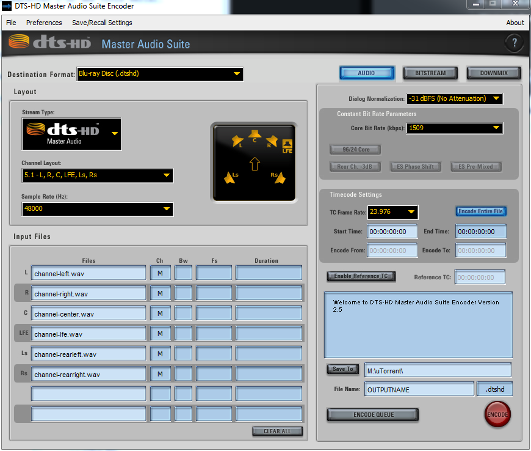
Take note that the Dialog Normalization box is set to -31 dBFS (No Attenuation). This means no dialog normalization will be applied. Also note that the encoder is set to output a .cpt file. If you are performing an HD encode and want lossless audio, change this to a .dtshd file. Otherwise, when the encoding process has finished, change the .cpt extension to .dts.
Encoding AC3 Audio: ShowOpen up Sound Sound Forge and open the .w64 file you created with eac3to. It will take a few minutes for the audio to be processed. Once completed, go through the audio and highlight a region in the Center channel (usually the third stream in 5.1 sources) that has primarily dialogue (no music or sound effects). Make sure to only select the center channel, otherwise all six channels will be averaged and you will get an inaccurate value. Then click Process->Normalize. Click the Average RMS level (loudness) radio button and then press Scan Levels.
After a few seconds, a value should show up for the RMS (undernearh the Scan Levels button). Write down/remember this value. Now click Cancel. Make sure to click Cancel and not OK, otherwise Sound Force will normalize the audio.
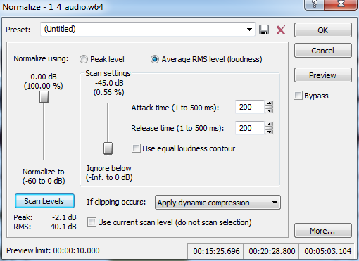
Now click File->Save As. Make sure "Dolby Digital AC-3 Pro" is selected and the "5.1 Surround DVD" profile is selected. Now click the Custom... button. On the first tab, make sure the settings match below. Change the "Audio coding mode" setting to match your audio, e.g., pick 2/0 for stereo audio. Also make sure the "Data rate" is set to your desired bitrate. Stereo audio is often encoded at 192kbps, and surround audio is often encoded at 448kbps for SD encodes and 640kbps for HD encodes. Then set the Dialog normalization to the value you wrote down earlier. (In some cases, the value you calculated before may be below -31 dB. In this case just choose -31 dB in the dialog.)
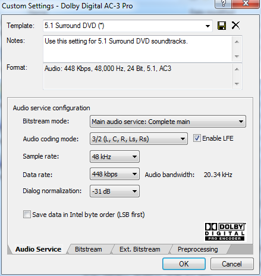
Now go to the Preprocessing tab. Uncheck all input filtering and surround channel processing. Make sure that RF overmodulation protection is unchecked. For the Line mode profile, the recommended value is "Film: Light".
Some people do not like the idea of compressing the dyanmic range of the audio, and will recommend choosing None for the Line mode profile. The concern is understandable, but in most cases encodes are going to be viewed on computer speakers or in an amateur home theater (especially considering this is an SD encode if you're using Sound Force). Having the full dynamic range is unnecessary and will make the film unpleasant to listen to if there are any loud/soft noises. The choice is ultimately yours. (Note that most Hollywood DVDs use "Film Light" anyway.) You can read this article for more information
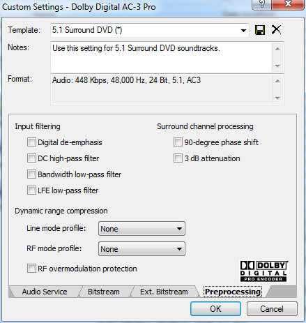
Finally, press OK and then Save the .ac3 file to the folder of your choice.
The resulting file will be your final main audio to be used later on down the line in muxing.
4. Transcoding Commentary Audio
: Show
Open another command prompt, and use oggenc2 to transcode that .wav file you created after demuxing to an .ogg stream using the following command.
oggenc2 commentary.wav -q 1.0 -o commentary.ogg
The resulting .ogg file is what you will use to mux into the final encode.
5. Preparing the Video:
: Show
Quick Video Primer: ShowMost of the information in this section has to do with processing the video before it is compressed. Unfortunately, DVD authors hate following standards for some godforsaken reason and make DVD video of all shapes and sizes. Here are a few terms you should know:
- Hard Telecine - Standard film is shot at 23.976 fps, but the standard for video broadcast when DVDs were created was 29.97 fps. If you calculate it out, that means there needs to be an extra 1 for every 4 frames in order to get the framerate up to par. So what DVD authors did was use telecining, where in every four frames, a fifth frame is generated by splitting one frame into two. So if you have frames A, B, C, and D, telecining will generate the frames A, AB, BC, C, and D, where frames AB and BC have half taken from one frame and half taken from another. (More Info)
- Soft Telecine - This is similar to hard telecine, but the actual video is not telecined. Rather markers are just added to the video that tells the DVD player where to split frames and telecine on the fly.
- Double Hard Telecine - This is when two different telecine patters are applied to the same section of video. This is often found in animated videos.
- Interlacing - Progressive video is taken in frames per second, i.e., the camera captures an entire frame of video in one instant, waits, and then repeats. Interlaced video is different in that the camera captures half of a frame (every other line of pixels), waits, captures the other half, waits, and repeats. Interlacing was created because even though the resolution of the video is the same, only half of a frame needs to be transferred at once, allowing for easier streaming over low-bandwidth lines. Unfortunately, you cannot simply pair up the two half-frames (or fields), because remember that they were captured by the camera at different times, so you need to actually guess and interpolate what the other half of each field is.
All of these conditions need to be removed and fixed so that you end up with a purely progressive video stream.
Open AvsPmod. If you used DGIndex to index the file, drag the .d2v file into AvsPmod. Otherwise, drag the .mkv that eac3to created for you into AvsPmod and change DirectShowSource to FFVideoSource and hit F5 to refresh. At this point AvsPmod will appear to be frozen. This is normal -- ffvideosource is indexing the video so it can be displayed properly. The process takes quite a while to finish. If you get an error saying FFVideoSource does not exist, then AviSynth is not loading all of your plugins. You may try working around this by adding the following to the top of your AviSynth script:
import("C:\Program Files (x86)\AviSynth 2.5\plugins\ffms2.avsi")
LoadCPlugin("C:\Program Files (x86)\AviSynth 2.5\plugins\ffms2.dll")
Before you finalize your AviSynth script, you need to run some tests to figure out what type of video you are dealing with. This is usually very easy with Blu-ray sources as it is almost always pure progressive or pure interlaced video. With DVD's, however, it is not as easy. The only reliable way to figure out the type of video is to look at it yourself! With the video in AvsPmod, step frame by frame through the source and see what it looks like. If the video looks like one half of the frame doesn't match up with the other, i.e., the even lines are different from the odd, then it is probably interlaced. If the video looks fine most of the time, but then every two out of five frames looks interlaced, it is probably telecined. In some cases, it might even be a combination of the two, meaning the video looks interlaced, and after you deinterlace it looks telecined.
From here, parts of your script depend on your source and what you want to do with your video. As with before, read and follow any and all sections that apply to your encode. Read and follow the sections that apply to you in the order listed here.
The video is entirely telecined (usually NTSC live-action DVDs).: ShowIf you have an NTSC DVD or the video is otherwise telecined, add the following line to your script TFM(d2v="my_project.d2v", clip2=QTGMC().SelectEven()).TDecimate() If you are encoding an anime or cartoon source, add mode=1 to TDecimate.
The video is entirely interlaced.: ShowAdd the following line to your script: QTGMC().SelectEven(). If you want, you may tweak QTGMC's settings. For slow computers, setting the option Preset="Ultra Fast" will cause QTGMC to use YADIF (Yet Another Deinterlacing Filter), which is much faster and will reduce encoding time, though this is not recommended unless your computer really cannot handle the quality deinterlacing.
Generally for HD sources, i.e., Blu-ray, you do not need heavy-duty placebo-level deinterlacing, so using Preset="Medium" or similar may increase encoding speed by a lot without any reduction in quality. For DVD sources, though, high quality deinterlacing is needed more. See the QTGMC page for a more complete explanation.
The video is a hybrid of telecine with something else.: ShowAdd the line AnimeIVTC(mode=4, ifade=true, omode=2, pass=1) to your .avs file. Now open VirtualDub, select the video file, and run File -> Run video analysis pass, just like before. Then change pass=1 to pass=2 and leave it at that. It is strongly recommended you look into AnimeIVTC and understand its options before using it.
The video has different progressive/interlaced/telecined sections (such as interlaced credits in a telecined movie).: ShowThe first step is to separate the sections. Start at the beginning, note whether the video is progressive/interlaced/telecined, and then find the frame number where that section ends. Repeat this process until you have a list of all the sections, what type of video the sections are, and the frame number where the section ends.
Start by adding the following line to your .avs file: AnimeIVTC(mode=4, ifade=true, omode=2, pass=1). Now you need to specify the sections. For interlaced sections, set i1=, replacing frame with the frame number where the section ends. For progressive sections, set p1=, replacing frame with the frame number where the section ends. For telecined, etc. sections, set e1=, replacing frame with the frame number where the section ends. Note that you can use i1, i2, p1, p2, e1, e2, and e3, which means you can specify up to two interlaced section, up to two progressive sections, and up to three telecined sections. You do not have to use them all.
An example of what you would use if a video has interlaced opening credits, a telecined movie, and then interlaced closing credits:
AnimeIVTC(mode=4, ifade=true, omode=2, pass=1, i1=4301, e1=221321, i2=228488)
Now go open VirtualDub, select the video file, and run File -> Run video analysis pass, just like before. Then change pass=1 to pass=2 and leave it at that.
After handling telecining and interlacing, you may need to crop or resize your video. Always crop first then resize. Follow all instructions below that apply to your video and encode:
The video has black bars on the top or sides (even small bars of one pixel).: ShowClick Video->Crop Editor. When cropping the video:
- Remove all black bars from the top, bottom, left and right sides.
- Make sure both the horizontal and vertical resolutions are even numbers (mod 2).
- Overcrop onto the movie itself only to satisfy the above rule.
I have an HD source and want to resize to a different resolution.: ShowTo resize, click Tools->Resize calculator. The Video resolution should already match the source resolution of the video. Take note of the value in the "Pixel aspect ratio" box (or PAR for short). Click Configure and set the "Target PAR" to whatever PAR you just saw. Make sure the "Resize block constraints" are 2x2, and the "Max search aspect ratio error" is 0.3%. Then, in "Avisynth resize", replace LanczoResize with Spline36Resize. Press OK.
Now use the left and right arrow buttons to find a new resolution that matches your desired resolution. Note that with standard resolutions, such as 480p/576p/720p/1080p, for widescreen films (16:9 or greater) you want a resolution that is 854/1024/1280/1920 pixels wide respectively, but for fullscreen films (less than 16:9), you want a resolution that is 480/576/720/1080 pixels high respectively. Once you have found a good resolution, press Apply.
I should emphasize that inverse telecine and deinterlacing should be done before cropping and anything else. This is an absolute requirement and doing otherwise may end up in really bad results. Also, make sure not to inverse telecine or deinterlace unless it actually applies. Doing so without the video being telecined or interlaced will result in a lower quality encode.
Finally, add the line SelectRangeEvery(20000, 500, 10000) to the end of your script in AvsPmod. SelectRangeEvery tells AviSynth to only select certain frames. The syntax is as follows:
SelectRangeEvery(interval, length, offset)
First, Avisynth skips offset frames at the beginning. From there, it will select the first length frames every interval frames. In other words, for all frames after the offset, Avisynth splits the film into even intervals, and then takes a certain number of frames from the beginning of each interval.
In the example given, with the numbers 20000, 500, and 10000, Avisynth will first skip 10,000 frames, then take 500 frames at each 20,000 frame mark. If you do the calculations, that means it takes frame 10000-10500, 30000-30500, 50000-50500, etc.
These numbers can be changed if needed. The goal is to have x264 encode between 1,000 and 5,000 frames from your source for use with testing different x264 parameters. The first 10,000 frames were skipped here because the beginning frames are often the opening credits - black background with white text - and are not useful in determining what x264 settings to use. You shouldn't have to do any math; just mess around with the numbers until the total frame count in Avisynth is a good number.
You should now have something that looks like this:
ffvideosource("C:\Users\Root\Documents\FEAR_AND_LOATHING_IN_LAS_VEGAS\00010.mkv")
Crop(0, 132, -0, -132)
SelectRangeEvery(20000,500,10000)
Make sure to save. If you're not encoding from DVD, you may close AvsPMod if you want, but I recommend you keep it open anyway. If you are encoding from DVD, you have to keep it open as you will doing some stuff with it later.
6. x264 Settings:
: Show
Open the x264 Launcher:
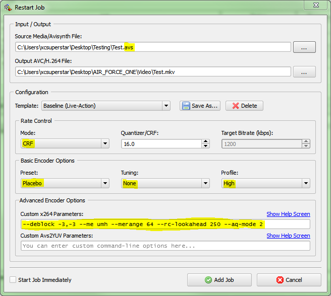
Make sure Mode is set to CRF, Preset is set to Placebo, Tuning is set to Film and Profile is set to High. Then add --aq-mode 2 --merange 32 in the Custom x264 Parameters box. Your input will be the .avs test script you just created.
First you need to find out the SAR of your source. If you are encoding from Blu-ray or HD-DVD, you can safely assume your SAR is 1:1 and skip this part. Otherwise, click Tools -> Resize calculator, and next to the "Pixel aspect ratio" box click "..." and click "compute from .d2v". Take note of the values in the "Pixel aspect ratio" boxes, as that is your SAR. Add --sar x:y in the Custom x264 Parameters box.
The primary setting to be tested is the value in the CRF box, but before you test for that you should know about other possible settings that must be tested and tuned.
--ref: ShowUse the equation Floor( 32,768 / ( Ceil( final_width / 16 ) * Ceil( final_height / 16 ) ) ) where Floor means round down to the nearest integer and Ceil means round up. That is the --ref value you should use. Increasing refs past that will break compatibility on some standalone devices. If you know specifically what devices you are encoding for, and what they can support, you may change the ref value to what is appropriate. The above equation is for Level 4.1. To get --ref values for other levels, replace "32,768" in the equation with the proper value from the Wikipedia page on H.264. For SD encodes, you can leave --ref out, which will default to 16 because of the Placebo preset, or you can lower it if your computer is too slow.
--bframes: ShowThis setting determines the maximum number of bframes x264 is allowed to use in a row. This does not mean it will use them all, as x264 will decide during encoding what is optimal. This setting is merely a maximum to cut off x264 for speed purposes.
The best setting for this would be to just leave it out and use the default Placebo of --bframes 16, which is the maximum and lets x264 have free reign over how many bframes to use. However, this can cause encodes to become time consuming, especially for slower computers.
To determine the optimal value for this setting, first adjust the SelectRangeEvery line in your Avisynth script so that test encodes have 10,000 frames or so, then use --bframes 16 on a test encode and look at the stats output after the encode has finished. Thee will be a line that looks like this:
x264 [info]: consecutive B-frames: 0.5% 1.1% 3.6% 24.0% 14.4% 43.3% 4.0% 3.4% 1.1% 1.4% 0.5% 0.9% 0.3% 0.3% 0.2% 0.9% 0.1%
There are 17 values listed. Each one represents a specific number of consecutive b-frames, from 0 to 16. Each value shows the percentage of total frames that were able to make use of that number of consecutive b-frames. From these numbers choose the largest number of bframes whose percentage is >= 1.0%. In the above example, use --bframes 9. Make sure to change back your SelectRangeEvery line after testing bframes so that you can test faster.
--me/--merange: ShowThe --me and --merange options determine the methods of motion estimation. When compressing, x264 will scan the video and try and determine motion patterns in the video. By finding these "motion vectors", x264 is able to compress further between frames.
The --me option sets the algorithm x264 uses for motion estimation. When using the settings mentioned above (i.e., Preset set to Placebo), this setting is set to "tesa", the most intense setting. The --merange option sets how many frames x264 will scan. The above default settings sets this to 32.
Higher --me settings are very slow. Sometimes it may be in your best interest to lower the --me setting and, as compensation, raise the --merange setting. Firstly, never set --me to anything below "umh". Below is explanation of the different --me modes, and why/when you should use them:
- --me umh --merange 32/48 - This much faster than other settings. Additionally, for movies with lots of motion, e.g., action movies, the motion in the video is obvious enough where you don't need to go any higher than this setting.
- --me esa --merange 32 - Basically a faster version of the defaults given before. The --merange setting is the same, but --me is set to "esa", which is one step lower than "tesa" (the default). Use this if your CPU sucks.
- --me tesa --merange 16 - This uses "tesa", just like the default, but lowers the --merange value. This is useful for low motion films, where an increase in the amount of frames analyzed will not help.
- --me tesa --merange 32 - This is the default value. If you were to just use the settings given in this guide and not change anything, this is equivalent. It is very slow, but covers all cases.
--vf: ShowIf your video is not progressive, you cannot use this option. This allows you to crop and/or resize your source video without the need for using an AviSynth script. Do not use this parameter in your test encodes, only for the full encode. When you perform the full encode, copy the crop and resize numbers to x264. Remember to crop before resizing. The syntax is as follows:
--vf crop:{left},{top},{right},{bottom}/resize:{width},{height},{sar},method=spline
Replace the {left}, {top}, {right} and {bottom} with your crop settings and {width}, {height}, and {sar} with your resize values and SAR. (If you are encoding from Blu-ray, make the SAR "1:1".)
--psy-rd: ShowThis is a bit of a hack option and plays upon a feature of the human eye: we prefer an image that is distorted from the original but has the same grain and complexity over an image that is blurred or softened but not distorted at all. Play with this setting only if you want your encodes perfect.
If you do adjust this setting, first test for CRF (described later) and add --no-psy while testing CRF. Once you have a CRF value, you can test this parameter. --psy-rd takes two arguments (see this explanation to learn more about what they are). First make test encodes with the first setting by starting and --psy-rd 1.0:unset and changing the value +/- 0.1 to 0.3 or so. Then change the second value, starting at 0.0 and adjusting.
--aq-strength: ShowSometimes you might want to play with AQ strength in order to optimize even further. Adaptive Quantization (AQ) adjusts the video by using more bits in areas of the video that are more complex and taking away from areas that are simpler. The downside of this is that if it's too strong, then background areas of the encode will show too much quality degradation, even when other parts look just fine. So if it looks like faces and details are fine but the background areas are losing quality, you can try lowering the --aq-strength option.
Animation-specific Options: ShowSome options may help specifically with animated or CGI movies.
- --trellis - Changing this from 2 to 0 might help with cartoon, animated and CGI sources.
- --no-dct-decimate - Adding this parameter can help with very sharp/detailed sources. Only for use with CGI and highly detailed animation.
- --no-weightb - Can help your encode retain a bit more detail. Only for use with CGI.
Slow Computer Options: ShowNot everybody has the fastest computer in the world. And the default encoding settings in this guide are really slow. If you don't feel like waiting that long, you can set --me umh in the custom encoding options. You may also lower the --ref, --merange, and/or --rc-lookahead values to speed up encodes.
7. Test Encodes:
: Show
Test Encodes are probably the most important, yet most subjective, part of the entire encoding process. Once you have your Avisynth script and x264 settings good to go, this is the last thing you need to do for the video.
How test encodes work is that you take your Avisynth script and x264 settings and then make a number of encodes, varying a certain setting each time while keeping everything else constant. In other words, encode, tweak, encode, tweak, etc. Then you take all your test encodes and use AvsP to compare them side-by-side, at which point you pick the best one.
Generally, test encodes use only a part of the entire film, which is the purpose of the SelectRangeEvery line added in the Avisynth script earlier. Also, unless you want to really get intense, the only parameter you will be modifying and testing for is CRF, which is the primary determinant in video quality when you encode.
The general strategy for most movies when performing test encodes is the following:
- Test whole-numbered CRFs. (I usually do between 15 and 25 just so that I know that my last test encode will always have clear quality loss.)
- Determine when quality begins to degrade.
- Test fractional CRFs in between the value you found above.
- Determine when quality begins to degrade.
...
For each test encode, paste your desired commandline parameters into the bottom line of the launcher. Make sure you have set an output directory and file name. Then click the Start! button and wait for the test encode to finish. Then change the CRF to the next value, rinse and repeat.
Once done, open AvsPmod. In a new tab, enter the script:
a=import("C:\Users\Root\Documents\loathing_test.avs").subtitle("Source", align=9)
b=ffvideosource("C:\Users\Root\Documents\test_001.mkv").subtitle("Encode", align=9)
c=ffvideosource("C:\Users\Root\Documents\test_002.mkv").subtitle("Encode", align=9)
...
interleave(a, b, c, ...)
spline36resize(converttorgb,ffsar>1?round(width*ffsar):width,ffsar<1?round(height/ffsar):height)
ffinfo(framenum=true,frametype=true,cfrtime=false,vfrtime=false)
Make sure to specify the paths to your source and encodes. The first line is the source Avisynth script you used to make the test encodes and the subsequent are test encodes. The last line adds the red text to the top-left corner of the screenshot, displaying the current and total number of frames as well as the frame type.
Use the left and right arrow keys to cycle through the frames. Pay close attention to frame transitions; there is a clear difference between varying compression applied to the same frame, and entirely different frames.
A few tips:
- Quality degradation is most apparent in grain loss, which is when the fine grain that you see in the video becomes "flattened" by compression. If you see any quality loss worse than grain loss (such as blatant artifacting), then your CRF value is way too high.
- Ignore I-frames here since they are the least reliable indicator of quality retention.
- Be aware that scenes with a lot of motion will have more quality degradation. This is done on purpose. The human eye cannot see quality degradation as well in high motion scenes.
- Look more for grain loss than grain shift. The human eye prefers an image that is distorted yet still grainy over one that is blurred yet not distorted.
- Do not consider your resolution. A high quality encode should stand the test of time, and in the future 1080p will be today's 480p, so don't think it's OK to get away with something because nobody will notice it on today's screens.
- Try going forward and backwards. Sometimes it is easier to see when quality stops degrading rather than when it starts, so going from your lowest quality test encode and scrolling up may make it easier.
Don't get stuck on comparing the same two frames when deciding what encding parameters should be changed. You're looking for quality loss across the entire movie as represented by the test encode. Remember, the goal is to retain as much perceivable quality as possible, not retain every last speck from the source.
8. Encoding the Entire Movie:
: Show
If your video is ONLY being cropped and/or resized and NOT inverse telecined or deinterlaced, add the parameters to crop and resize your video into the x264 options and change the input to the .mkv that eac3to created earlier rather than the .avs script. This will bypass Avisynth and make things a lot faster.
However, if the source is telecined or interlaced, then Avisynth is still needed to get rid of that. In these cases, keep everything how it was and just remove the SelectRangeEvery() line from the Avisynth script.
Finally, click the Start! button:
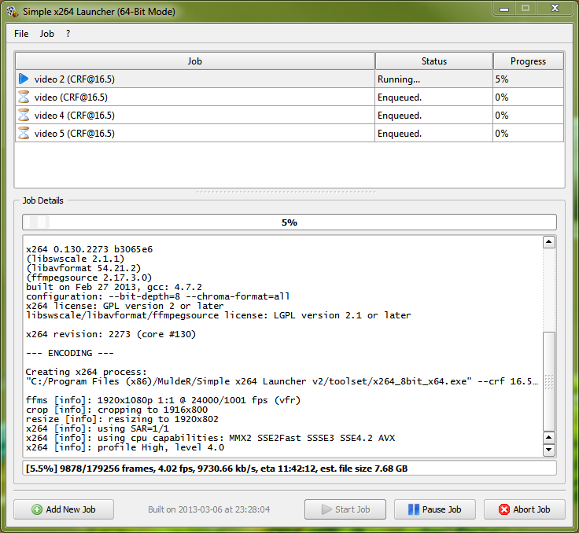
9. Extracting Chapter Markers:
: Show
Open Chapter Grabber and select File --> Open Disc. From there, pick the folder for your source disc. Once the chapter timecodes show up in Chapter Grabber, fill in the name of the film. Now open the actual Blu-ray disc or DVD in the player of your choice and find the list of chapters in the menu. Then copy the names into ChapterGrabber. Do not use ChapterGrabber alone to get the chapter names. Check the actual disc and menu for the chapter names. You should end up with something that looks like this:
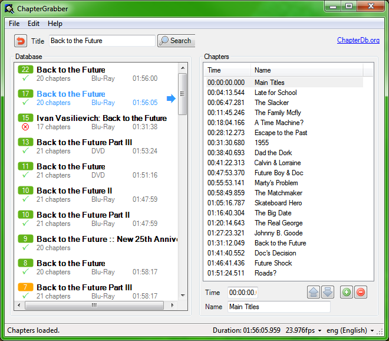
Save the result as an .xml file.
10. Ripping Subtitles
: Show
Subtitles on DVDs and Blu-rays are stored as bitmap images, which are very large and take up unnecessary space. Therefore it is best to OCR the subtitles into text form. However, depending on whether you are ripping from Blu-ray or DVD, the process is different due to different formats.
Ripping DVD Subtitles: ShowOpen up SubRip and click File -> Open VOB(s). Then click Open Dir. Find your VIDEO_TS/ folder and pick a VOB file that is part of your main movie. SubRip will auto-select the rest. You know you picked the right one if subtitle listings show up in the Language stream list.
Select a subtitle track and press Start. SubRip will ask for character it cannot identify automatically, so enter in each letter it asks.
Once complete, click Corrections -> Post OCR Correction. Check everything except "Try to correct orthography" and "Convert all text to LowerCase before". Also make sure to pick the correct language if it is listed, otherwise leave it as English. Press OK.
Finally, save the subtitle file and save it as Unicode if asked. It is recommended you copy/paste the final file into a word processor and check spelling and whatnot to fix occasional mistakes.
Ripping Blu-ray Subtitles: ShowOpen Suprip and click Open to select the .sup file demuxed from eac3to. Press Ctrl-O and SupRip will begin OCRing and asking for any characters it does not know.
Type in the letters it asks and make use of the Italic checkbox.
Finally, click the SRT tab and save the subtitle file. It is recommended you copy/paste the final file into a word processor and check spelling and whatnot to fix occasional mistakes.
_files/166eon6.png)
_files/2uen3tt.png)
11. Muxing Everything Together
: Show
Open MKVmerge. Click File->Options, and in the Options dialog make sure Disable header removal compression for audio and video tracks by default is checked,
Now drag all necessary files - the video you encoded, main audio stream, commentary audio, and subtitles - into the Input files box.
- Each track should have the correct language set.
- Commentary audio and SDH subtitle tracks should be given an appropriate track name.
- If your encode has commentary audio, make sure Default track flag is set to yes for the main audio stream.
- Unless the movie is in a language other than English, Default track flag should be set to no for all subtitle tracks.
- All video and audio tracks should have Compression set to none in the Extra options tab. If you checked off the option mentioned above, it should already be preset to that by default.
Important: If you were told to use AnimeIVTC with pass=1 and then pass=2, there will be a "timecodes.txt" file in your source directory. In MKVMerge, select your video stream, press Browse next to the Timecodes text box, and select that file.
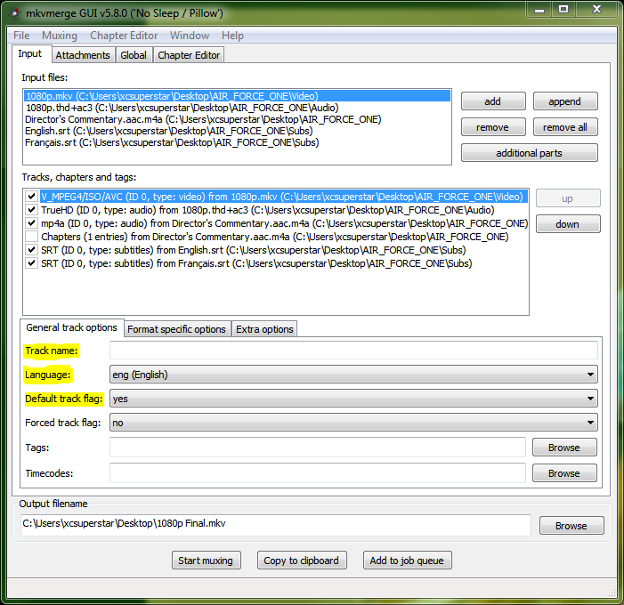
Now go to the Global tab and enter the name of the Movie in "File/segment title". Under Chapters, click Browse and select the .xml file you created with ChapterGrabber. Set the language and Charset appropriately (usually eng and UTF-8, respectively).
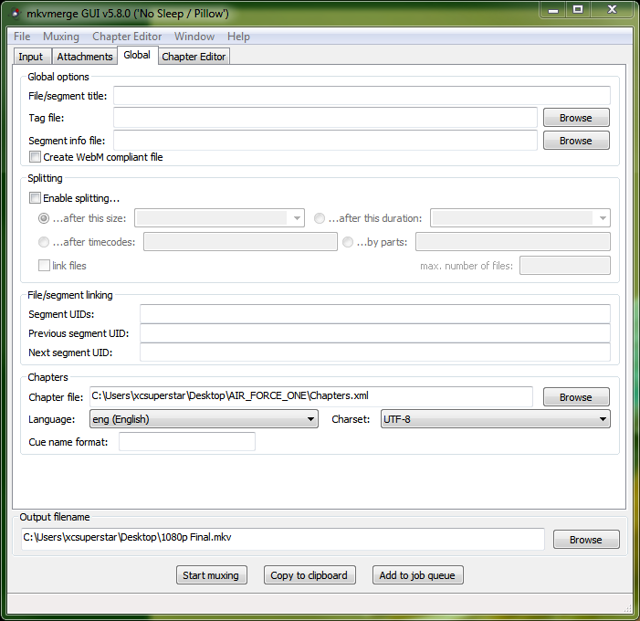
Name your output file, and click Start muxing. The muxing process will take several minutes.
Last but not least, play your file. If it's a good movie, consider watching the whole thing.
Just make sure no problems occurred and that the movie looks like it is supposed to.To Do: Show
1) Change eac3to command line over to GUI if possible for easier use.
2) Describe how to detect field blending, double telecine, repetition upconverted, and PAL's fake interlaced.
3) Use multi-threaded Avisynth.
Last edited by
Nuked [ Apr 29 2016, 19:15 ]
#417822
by Ruinpeople_files/Rank5.png "Rank 5: 105 Awards") (Torrent King)
(Now Benson, I'm going to have to turn you into a dog for a while)
[ Jan 19 2012, 13:30 ] - [Quote]
[Report Post]
↑
(Torrent King)
(Now Benson, I'm going to have to turn you into a dog for a while)
[ Jan 19 2012, 13:30 ] - [Quote]
[Report Post]
↑
(Torrent King)
(Now Benson, I'm going to have to turn you into a dog for a while)
[ Jan 19 2012, 13:30 ] - [Quote]
[Report Post]
↑
This looks Great !
Will give it a try someday.
Will give it a try someday.
#417839
by brownt0wn (Stalky Stalkerton)
(Gettin my ass whooped by Fluffles on the reg.)
[ Jan 19 2012, 14:58 ] - [Quote]
[Report Post]
↑
(Stalky Stalkerton)
(Gettin my ass whooped by Fluffles on the reg.)
[ Jan 19 2012, 14:58 ] - [Quote]
[Report Post]
↑
lol at the license.
#417914
by stachio_files/Rank1.png "Rank 1: 31 Awards") (Power User)
[ Jan 19 2012, 17:05 ] - [Quote]
[Report Post]
↑
(Power User)
[ Jan 19 2012, 17:05 ] - [Quote]
[Report Post]
↑
(Power User)
[ Jan 19 2012, 17:05 ] - [Quote]
[Report Post]
↑
A few clarifications,
parent5446 wrote:
In the guide written by echohead it was mentioned to add TFM().TDecimate() if the source was NTSC, as it reduces fps from 29.97 to 23.97, maybe you could add this to remove any ambiguity and confusion to newbies. My reasoning is that most of the people trying their hand first time might not know what the terms telecine or interlaced mean or not know how to detect it.
I use YADIFMod(edeint=NNEDI3()) for interlaced sources, is there any difference/ which one is better if given an option?
Also, are you planning to provide a rough template regarding various parameters to be used for Film, Animation, CGI, Rotoscopic sources etc..?
Thanks for rewriting the guide to combine DVD and Blu-ray encoding processes in a single place
Edit: As Mushhead mentioned below, is resizing required in AvSP?
parent5446 wrote:
The video is telecined (2 out of 5 frames looks interlaced).:
Add the following line to your script TFM().TDecimate().
The video is interlaced: Use
QTGMC()
SelectEven()
In the guide written by echohead it was mentioned to add TFM().TDecimate() if the source was NTSC, as it reduces fps from 29.97 to 23.97, maybe you could add this to remove any ambiguity and confusion to newbies. My reasoning is that most of the people trying their hand first time might not know what the terms telecine or interlaced mean or not know how to detect it.
I use YADIFMod(edeint=NNEDI3()) for interlaced sources, is there any difference/ which one is better if given an option?
Also, are you planning to provide a rough template regarding various parameters to be used for Film, Animation, CGI, Rotoscopic sources etc..?
Thanks for rewriting the guide to combine DVD and Blu-ray encoding processes in a single place
Edit: As Mushhead mentioned below, is resizing required in AvSP?
Last edited by
stachio [ Jan 19 2012, 17:27 ]
#417918
by mushhead_files/Rank6.png "Rank 6: 121 Awards") (salty suck my balls)
(DENMARK)
[ Jan 19 2012, 17:16 ] - [Quote]
[Report Post]
↑
(salty suck my balls)
(DENMARK)
[ Jan 19 2012, 17:16 ] - [Quote]
[Report Post]
↑
(salty suck my balls)
(DENMARK)
[ Jan 19 2012, 17:16 ] - [Quote]
[Report Post]
↑
stachio wrote: _files/viewpost-right.png "View Post")
I also use NNEDI3 for deinterlacing and I'd have to agree that your description of telecining needs some expansion/explanation.
I also don't use the resize in AvsP
A few clarifications,
parent5446 wrote:
The video is telecined (2 out of 5 frames looks interlaced).:
Add the following line to your script TFM().TDecimate().
The video is interlaced: Use
QTGMC()
SelectEven()
In the guide written by echohead it was mentioned to add TFM().TDecimate() if the source was NTSC, as it reduces fps from 29.97 to 23.97, maybe you could add this to remove any ambiguity and confusion to newbies. My reasoning is that most of the people trying their hand first time might not know what the terms telecine or interlaced mean or not know how to detect it.
I use YADIFMod(edeint=NNEDI3()) for interlaced sources, is there any difference/ which one is better if given an option?
Also, are you planning to provide a rough template regarding various parameters to be used for Film, Animation, CGI, Rotoscopic sources etc..?
Thanks for rewriting the guide to combine DVD and Blu-ray encoding processes in a single place
I also use NNEDI3 for deinterlacing and I'd have to agree that your description of telecining needs some expansion/explanation.
I also don't use the resize in AvsP
#417960
by parent5446 (Elite)
[ Jan 19 2012, 19:25 ] - [Quote]
[Report Post]
↑
(Elite)
[ Jan 19 2012, 19:25 ] - [Quote]
[Report Post]
↑
stachio wrote:
You can use Yadifmod with NNEDI3, and I will add it in as an option. QTGMC is just a lot more intense and higher quality deinterlacer. I just figured since Yadif is what Handbrake uses we should be stepping up our game a little bit.
As for the telecine explanation, I totally see what you mean and will expand upon that promptly.
And for the resizing part, it was not mentioned in echohead's guide, but it is crucial that the final storage resolution of the video right before encoding is mod16. It generally does not affect quality, but when the resolution is not mod16, x264 will pad the video with its own data to get it to mod16, which usually results in a loss of compression. If you guys really feel that mod16 isn't worth it, I can make it optional or something, but it is something to think about as it does affect the final encode.
A few clarifications,
parent5446 wrote:
The video is telecined (2 out of 5 frames looks interlaced).:
Add the following line to your script TFM().TDecimate().
The video is interlaced: Use
QTGMC()
SelectEven()
In the guide written by echohead it was mentioned to add TFM().TDecimate() if the source was NTSC, as it reduces fps from 29.97 to 23.97, maybe you could add this to remove any ambiguity and confusion to newbies. My reasoning is that most of the people trying their hand first time might not know what the terms telecine or interlaced mean or not know how to detect it.
I use YADIFMod(edeint=NNEDI3()) for interlaced sources, is there any difference/ which one is better if given an option?
Also, are you planning to provide a rough template regarding various parameters to be used for Film, Animation, CGI, Rotoscopic sources etc..?
Thanks for rewriting the guide to combine DVD and Blu-ray encoding processes in a single place
Edit: As Mushhead mentioned below, is resizing required in AvSP?
You can use Yadifmod with NNEDI3, and I will add it in as an option. QTGMC is just a lot more intense and higher quality deinterlacer. I just figured since Yadif is what Handbrake uses we should be stepping up our game a little bit.
As for the telecine explanation, I totally see what you mean and will expand upon that promptly.
And for the resizing part, it was not mentioned in echohead's guide, but it is crucial that the final storage resolution of the video right before encoding is mod16. It generally does not affect quality, but when the resolution is not mod16, x264 will pad the video with its own data to get it to mod16, which usually results in a loss of compression. If you guys really feel that mod16 isn't worth it, I can make it optional or something, but it is something to think about as it does affect the final encode.
#417967
by mushhead (salty suck my balls)
(DENMARK)
[ Jan 19 2012, 19:37 ] - [Quote]
[Report Post]
↑
(salty suck my balls)
(DENMARK)
[ Jan 19 2012, 19:37 ] - [Quote]
[Report Post]
↑
I'm all for increasing quality but I was just using the settings agreed upon. If the consensus is to implement these additions then I'm all for it but what is the consequence as far as encoding time etc? As far as I'm aware there are only 3 of us with really powerful computers in the group that will remain able to do any encodes in a reasonable time with all of the higher settings.
I'm not sure if any of the changes will increase the time taken but it must be a consideration
I'm not sure if any of the changes will increase the time taken but it must be a consideration
#417973
by rik81h (Elite)
()
[ Jan 19 2012, 19:57 ] - [Quote]
[Report Post]
↑
(Elite)
()
[ Jan 19 2012, 19:57 ] - [Quote]
[Report Post]
↑
Well i've just used:- QTGMC() SelectEven()on a 22 minute clip and only got like just under 4fps, normally i'd get just under 7-8fps with yadifmod. I run an amd b55 @3.6ghz for ref.
#417977
by parent5446 (Elite)
[ Jan 19 2012, 20:01 ] - [Quote]
[Report Post]
↑
(Elite)
[ Jan 19 2012, 20:01 ] - [Quote]
[Report Post]
↑
Just a quite note: I removed the "--engage keep_bitstream_ar_info" from the MKVMerge CLI options. It seems from version 2.7.0 on that this has been changed to the default functionality and is no longer necessary.
rik81h wrote:
Try running Preset="Ultra Fast" (this actually causes QTGMC to use yadif as its deinterlacer_files/tongue.gif) )
)
rik81h wrote:
Well i've just used:- QTGMC() SelectEven()on a 22 minute clip and only got like just under 4fps, normally i'd get just under 7-8fps with yadifmod. I run an amd b55 @3.6ghz for ref.
Try running Preset="Ultra Fast" (this actually causes QTGMC to use yadif as its deinterlacer
)
Last edited by
parent5446 [ Jan 19 2012, 20:31 ]
#418064
by mushhead (salty suck my balls)
(DENMARK)
[ Jan 19 2012, 22:41 ] - [Quote]
[Report Post]
↑
(salty suck my balls)
(DENMARK)
[ Jan 19 2012, 22:41 ] - [Quote]
[Report Post]
↑
I've just run through a few test encodes with the resize in place and when I play the outputs they are all stretched. That can't be right so obviously this doesn't work for me
#418282
by parent5446 (Elite)
[ Jan 20 2012, 05:46 ] - [Quote]
[Report Post]
↑
(Elite)
[ Jan 20 2012, 05:46 ] - [Quote]
[Report Post]
↑
mushhead wrote:
It has to do with a small mistake in the guide that I forgot to fix when copying stuff from my rewrite of the HD encoding guide. For DVD-sourced encodes, you have to one of two things: 1) change the target PAR in the resize calculator configuration so it resizes to the same SAR or 2) don't use the --sar option in x264. The difference is whether you want to convert the DVD to square pixels, though from what I'm found it is unnecessary and misleading to do so, so I put the first method in the guide. The guide now has the correct instructions.
I've just run through a few test encodes with the resize in place and when I play the outputs they are all stretched. That can't be right so obviously this doesn't work for me
It has to do with a small mistake in the guide that I forgot to fix when copying stuff from my rewrite of the HD encoding guide. For DVD-sourced encodes, you have to one of two things: 1) change the target PAR in the resize calculator configuration so it resizes to the same SAR or 2) don't use the --sar option in x264. The difference is whether you want to convert the DVD to square pixels, though from what I'm found it is unnecessary and misleading to do so, so I put the first method in the guide. The guide now has the correct instructions.
#418832
by MailCook (Power User)
(I'm calm.)
[ Jan 21 2012, 12:32 ] - [Quote]
[Report Post]
↑
(Power User)
(I'm calm.)
[ Jan 21 2012, 12:32 ] - [Quote]
[Report Post]
↑
I think this yadifmod thing should be eyes only test.
If picture looks interlaced then it should be applied.
Even on NTSC sources decimating filter is enough most of the time.
Really, DGIndex is almost never correct about interlaced source.
Most of the time there's no need for yadifmod.
I applied it on my 20000 leagues encode as DGIndex showed it was interlaced on a batch of test frames.
And it ruined the picture when the shiny treasure was shown. It looked like it interlaced(yes, interlaced) the picture which wasn't interlaced.
If picture looks interlaced then it should be applied.
Even on NTSC sources decimating filter is enough most of the time.
Really, DGIndex is almost never correct about interlaced source.
Most of the time there's no need for yadifmod.
I applied it on my 20000 leagues encode as DGIndex showed it was interlaced on a batch of test frames.
And it ruined the picture when the shiny treasure was shown. It looked like it interlaced(yes, interlaced) the picture which wasn't interlaced.
Last edited by
MailCook [ Jan 21 2012, 12:32 ]
#418877
by rik81h (Elite)
()
[ Jan 21 2012, 16:30 ] - [Quote]
[Report Post]
↑
(Elite)
()
[ Jan 21 2012, 16:30 ] - [Quote]
[Report Post]
↑
@mailcook I have since taken your advice about visually checking instead of just believing dg index and it is apparent on some of the material i've been doing-extras and concerts
#418911
by parent5446 (Elite)
[ Jan 21 2012, 17:59 ] - [Quote]
[Report Post]
↑
(Elite)
[ Jan 21 2012, 17:59 ] - [Quote]
[Report Post]
↑
MailCook wrote:
Oh I totally agree. And it's not just DGIndex. There was a Blu-ray (yes Blu-ray, as in a BD50), where eac3to said the video was interlaced, yet when you bring it into Avisynth, it's perfectly progressive. XD
I think this yadifmod thing should be eyes only test.
If picture looks interlaced then it should be applied.
Even on NTSC sources decimating filter is enough most of the time.
Really, DGIndex is almost never correct about interlaced source.
Most of the time there's no need for yadifmod.
I applied it on my 20000 leagues encode as DGIndex showed it was interlaced on a batch of test frames.
And it ruined the picture when the shiny treasure was shown. It looked like it interlaced(yes, interlaced) the picture which wasn't interlaced.
Oh I totally agree. And it's not just DGIndex. There was a Blu-ray (yes Blu-ray, as in a BD50), where eac3to said the video was interlaced, yet when you bring it into Avisynth, it's perfectly progressive. XD
#419054
by dot_commie (Power User)
[ Jan 21 2012, 23:33 ] - [Quote]
[Report Post]
↑
(Power User)
[ Jan 21 2012, 23:33 ] - [Quote]
[Report Post]
↑
Crossposting from a TBB thread:
Here's just one comparison between yadifmod(edeint=NNEDI3()) and QTGMC()
You decide:
Nothing vs QTGMC: http://screenshotcomparison.com/comparison/104102
Nothing vs YADIF: http://screenshotcomparison.com/comparison/104104
QTGMC vs YADIF: http://screenshotcomparison.com/comparison/104105
Here's just one comparison between yadifmod(edeint=NNEDI3()) and QTGMC()
You decide:
Nothing vs QTGMC: http://screenshotcomparison.com/comparison/104102
Nothing vs YADIF: http://screenshotcomparison.com/comparison/104104
QTGMC vs YADIF: http://screenshotcomparison.com/comparison/104105
#419247
by parent5446 (Elite)
[ Jan 22 2012, 06:51 ] - [Quote]
[Report Post]
↑
(Elite)
[ Jan 22 2012, 06:51 ] - [Quote]
[Report Post]
↑
Note: I've changed the resizing section. Lately I've been reading that the mod16 resolution, while it does provide better compression, is not worth the scaling artifacts caused by resizing. I've kept information about resizing for those making HD-sourced SD encodes, but it is no longer part of every encode.
#419253
by zaplinaki (Torrent Master)
(I don't know how to hat)
[ Jan 22 2012, 07:03 ] - [Quote]
[Report Post]
↑
(Torrent Master)
(I don't know how to hat)
[ Jan 22 2012, 07:03 ] - [Quote]
[Report Post]
↑
_files/vx06mJE.jpg)
this looks great, thanks parent5446. Can we have a seperate guide for SD and HD, this might confuse loads of people.
Last edited by
zaplinaki [ Jan 22 2012, 07:05 ]
#419258
by parent5446 (Elite)
[ Jan 22 2012, 07:22 ] - [Quote]
[Report Post]
↑
(Elite)
[ Jan 22 2012, 07:22 ] - [Quote]
[Report Post]
↑
zaplinaki wrote:
Honestly, I think the idea of a combined guide is better. The problem with the two separate encoding guides is that people were only reading the one applicable to them, and then getting confused and asking questions that could have been answered by content included in the opposite guide. By having one central guide, information is centralized and standardized. Also, having two guides is a little redundant since 70% of the encoding process is exactly the same for SD and HD encodes.
If PTP really does want two separate guides, though, it shouldn't be hard. It would just mean copying and pasting this guide twice and then removing anything not necessary for the respective guide.
this looks great, thanks parent5446. Can we have a seperate guide for SD and HD, this might confuse loads of people.
Honestly, I think the idea of a combined guide is better. The problem with the two separate encoding guides is that people were only reading the one applicable to them, and then getting confused and asking questions that could have been answered by content included in the opposite guide. By having one central guide, information is centralized and standardized. Also, having two guides is a little redundant since 70% of the encoding process is exactly the same for SD and HD encodes.
If PTP really does want two separate guides, though, it shouldn't be hard. It would just mean copying and pasting this guide twice and then removing anything not necessary for the respective guide.
#419264
by mushhead (salty suck my balls)
(DENMARK)
[ Jan 22 2012, 07:31 ] - [Quote]
[Report Post]
↑
(salty suck my balls)
(DENMARK)
[ Jan 22 2012, 07:31 ] - [Quote]
[Report Post]
↑
I think it may be better to have two separate guides. You can always link to each other in the OP.
mushedit: Spelling!
mushedit: Spelling!
Last edited by
mushhead [ Jan 22 2012, 07:32 ]
#419362
by rik81h (Elite)
()
[ Jan 22 2012, 14:49 ] - [Quote]
[Report Post]
↑
(Elite)
()
[ Jan 22 2012, 14:49 ] - [Quote]
[Report Post]
↑
My first thoughts (being someone who is learning this lot) was to have it separate, but then i worked through it all and to be honest it does flow properly when you're actually applying what you're reading. So my vote is one guide.....to rule them all lol
#419433
by pledgewise_files/disabled.png "Be good, and you won't end up like this user") (Torrent King)
(You can't hurt me, not with my cheese helmet! )
[ Jan 22 2012, 17:46 ] - [Quote]
[Report Post]
↑
(Torrent King)
(You can't hurt me, not with my cheese helmet! )
[ Jan 22 2012, 17:46 ] - [Quote]
[Report Post]
↑
(Torrent King)
(You can't hurt me, not with my cheese helmet! )
[ Jan 22 2012, 17:46 ] - [Quote]
[Report Post]
↑

Nice guide. Thanks
Typo: TFM().TDecimate().
correction: TFM().TDecimate()
Typo: TFM().TDecimate().
correction: TFM().TDecimate()
#419461
by Voltaire (Legend)
(Put out to pasture)
[ Jan 22 2012, 18:28 ] - [Quote]
[Report Post]
↑
I was just mentioning how we could use an updated guide, and lo and behold you've already written it! Great work parent5446. It looks fantastic. Well laid out, and informative.
#419504
by parent5446 (Elite)
[ Jan 22 2012, 19:50 ] - [Quote]
[Report Post]
↑
(Elite)
[ Jan 22 2012, 19:50 ] - [Quote]
[Report Post]
↑
pledgewise wrote:
Fixed.
Voltaire wrote:
Thanks. Hopefully we'll end up with less confused encoders with this guide.
Nice guide. Thanks
Typo: TFM().TDecimate().
correction: TFM().TDecimate()
Fixed.
Voltaire wrote:
I was just mentioning how we could use an updated guide, and lo and behold you've already written it! Great work parent5446. It looks fantastic. Well laid out, and informative.
Thanks. Hopefully we'll end up with less confused encoders with this guide.
#419513
by dot_commie (Power User)
[ Jan 22 2012, 20:18 ] - [Quote]
[Report Post]
↑
(Power User)
[ Jan 22 2012, 20:18 ] - [Quote]
[Report Post]
↑
Can you explain more about sar? How to find it, what values to put in, etc. How does this relate to the ITU/Non-ITU as listed in echohead's tutorial?
#419523
by jmanrob (Member)
[ Jan 22 2012, 20:48 ] - [Quote]
[Report Post]
↑
(Member)
[ Jan 22 2012, 20:48 ] - [Quote]
[Report Post]
↑
First off nice guide, lord mulders launcher works great on both 32-bit and 64-bits OS. I prefer using this over cmd .bat encoding.
--rc-lookahead 250
I've read somewhere, maybe Doom9... Setting this too high can be potentially bad, it provides basically zero benefit besides making you feel better.
maybe keep this at the default of 60
Thx for the guides
--rc-lookahead 250
I've read somewhere, maybe Doom9... Setting this too high can be potentially bad, it provides basically zero benefit besides making you feel better.
maybe keep this at the default of 60
Thx for the guides